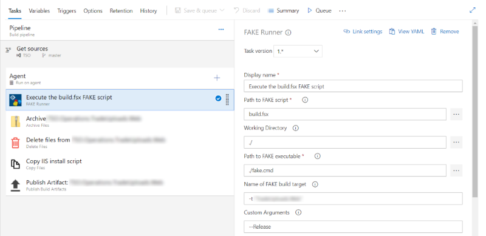

FAKE It Until You Make It
Grigoriy Belenkiy
Software engineer at 
@grishace
Denver Dev Day
May 31, 2019
DevOps
- What if you're more on the Dev side than on Ops?
- No dedicated team?
- Want to give F# a try?
FAKE = F# Make
- Code your build with gazillion of helper functions
- Not limited to the build - can run FSX script
- Global dotnet tool
Extras
- Paket = Nuget + scripts (from the GitHub for example)
- Download and add references
Demo
Hello, World!
Anatomy of the build script
- Paket - build group reference
- Evaluate environment variables (if needed)
- Targets (i.e. build steps)
- Target dependencies
- Default target
Demo
Hello, World! (again)
Bonus - Azure pipeline task
* 
Bonus - ARM Helper
1: 2: 3: 4: |
|